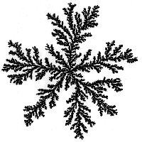

|  |
|
| More sophisticated is the off-lattice simulation: diffusing particles execute two-dimensional Brownian motion, and stick to the cluster when they get within a certain distance of any of the cluster particles. | ||
| Here are two large off-lattice DLA clusters. Click each small picture for a larger version in a new window. | ||
|
Return to DLA.